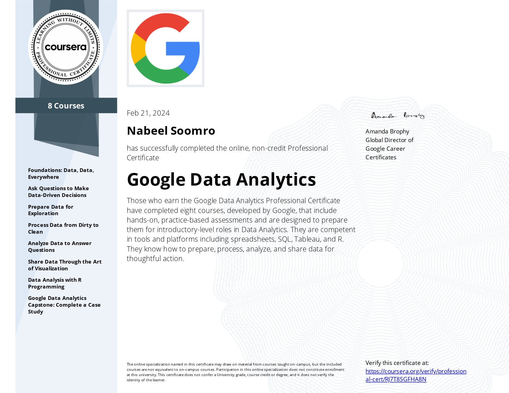

About Me
I'm a Psychology student with a keen interest in Data Analytics,
combining these disciplines to explore diverse perspectives and solve complex problems.
I'm currently delving into the fascinating world of psychology at university, exploring the intricacies of the human mind. Alongside my studies, I recently completed Google's Data Analytics course offered on Coursera, adding to my certifications in the field. In data analytics i'm currently studying Python and data scraping with it, aiming to deepen my understanding and expertise.
With a blend of insights from psychology and the precision of data analysis, I strive to uncover meaningful patterns and narratives in the data I work with.
